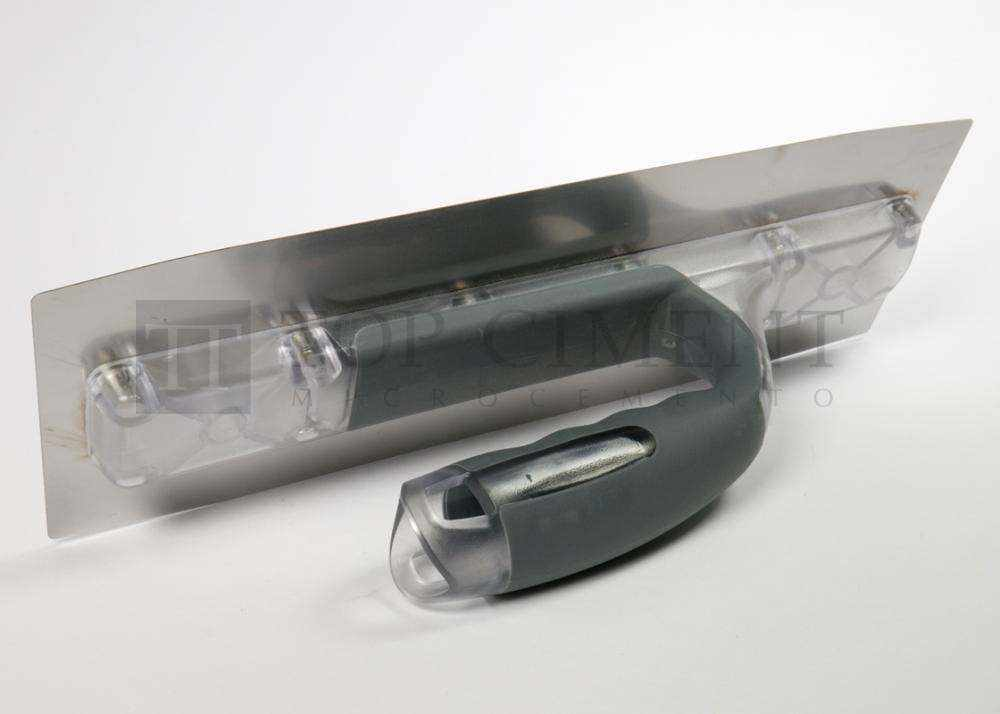

Généralités de l’application.
Les travaux de béton ciré durent en moyenne entre 4 et 6 jours, en tenant compte des temps de séchage et des différentes phases. La planification constitue 90 % du succès.
Uniquement dans les mains de professionnels
L’application de béton ciré n’est pas aussi simple que cela pourrait paraître, elle doit être réalisée par des professionnels maîtrisant le système. L’expérience est un facteur clé pour ne rien laisser au hasard. Le technicien devra s’assurer des conditions du support et le préparer, savoir choisir le béton ciré approprié avec les outils et choisir une procédure ou une autre en fonction de la finition à obtenir.
Planification des travaux
Avant de commencer, nous devons planifier les travaux pour donner à l’application du béton ciré le temps et l’espace appropriés entre les autres offices. Nous laisserons toujours l’application de béton ciré pour la fin, à l’exception de la dernière couche de peinture, l’installation de la menuiserie et des éléments des sanitaires.
Outils nécessaires
Le béton ciré est appliqué avec des outils spécifiques bien que communément employés dans le secteur du bâtiment.
Ruban de carrossier ou papier ruban : pour protéger les zones où sera appliqué le béton ciré d’éclaboussures.
Verre mesureur : l’utilisation du verre permet de doser la quantité de résine (pour les bétons cirés bi composants) ou d’eau (pour les mono composants) nécessaire au mélange.
Agitateur mécanique à basse révolution avec tige à double hélice pour mélanger le béton ciré en toute garantie et obtenir une masse homogène.
Spatule: utilisée comme appui à la truelle.
Truelle: de plusieurs types et tailles, en acier inoxydable flexible ou en caoutchouc en fonction du matériau à appliquer.
Aspirateur industriel, polisseur roto-orbital, gant de polissage et meulettes en carbure de silicium : après le séchage du béton ciré, il faut polir les imperfections et aspirer la poussière générée pour poursuivre le processus.
Rouleaux: utilisés pour appliquer les apprêts, le bouche-pores et les agents de scellage.